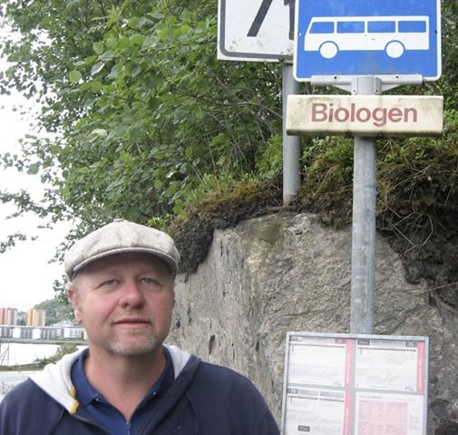

Navnet mitt er Martijn Bellemakers og jeg er utdannet biolog. I 2006 har jeg flyttet fra Nederland til Norge, i lag med min familie.
Fra 2006 har vi bud i Suldal, i 2020 har vi flyttet til Fossane, Hjelmeland.
Fra 2007 har jeg fått stilling hos fylkeskommune Rogaland som lærer på Sauda vidaregåande skule.
Seinere blir det også jobb som nettlærer for Nettskolen Rogaland.
Jeg underviser i naturfag (spesiell undervisning for Nettskolen Rogaland), biologi (ToppVolley Norge, Sand) og informasjonsteknologi.
I tillegg er jeg ePedagog for Nettskolen. Oppgave her er å støtte og veilede nettlærer fra Nettskolen Rogaland og har jeg ansvar for påmelding
programfag og elev- og lærerundersøkelse.